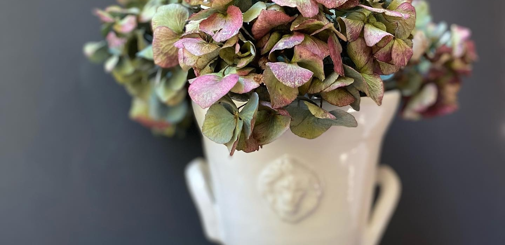

Julie LoRusso works from her garden home studio in Virginia. A self-taught ceramic artist, she combines various methods of working with clay, adorning wheel-thrown forms with sculpted details, as well as using slip casting and hand-building techniques. Inspired by the tulipières she saw in Amsterdam and London, Julie creates one-of-a-kind porcelain functional works that are also sculptural art when not in use.
JL Studio Pottery is sold through select home and interior boutiques. If you’re interested in becoming a stockist, please email.